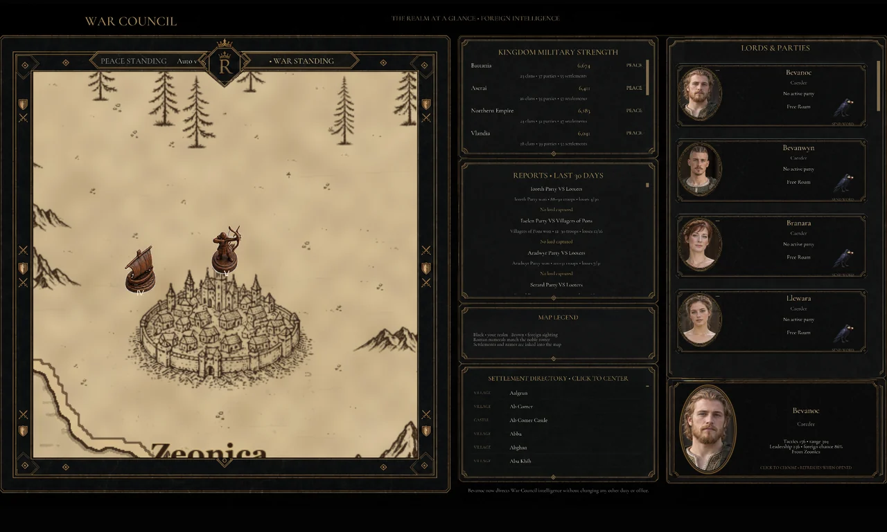
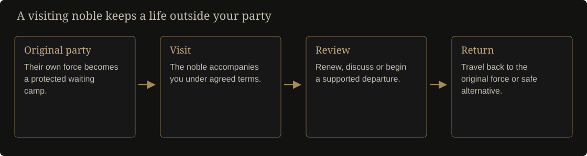

Mount & Blade II: Bannerlord · Reign
War, armies, and temporary guests
Give campaign orders, read the War Council, and manage temporary guests.
Development guide · November 24, 2026 · Edition notes
Giving a clear campaign order
Preview included#The Campaign Command Engine supervises accepted NPC party and army orders over time. It controls the commander's force, not your main party. You need legitimate authority or the commander's explicit agreement.
Specify the commander, objective, target, duration or stop condition, and any troop or supply requirement. “Patrol around this town until I recall you” is different from “capture that castle.” A conditional reply or counteroffer changes the terms. Read the accepted version before confirming.
Build the command with Alt+A in the supported conversation. For written orders or reports, open Correspondence with Ctrl+M and use Alt+A with the eligible commander selected.
Orders can adapt to changing danger, war state, geography, and duties. A commander may report trouble, withdraw, refuse, or ask for guidance. Correspondence can carry those reports and their deadlines. Issuing the order does not mean it has already completed.
Campaign objectives you can combine
Preview included#| Aim | Supported work |
|---|---|
| Prepare | Create the commander's party; recruit and resupply to agreed targets |
| Travel | Go to a named settlement or valid point; return home; withdraw to safety |
| Hold and observe | Hold until recalled or for a term; patrol; scout and report |
| Coordinate | Escort a party; form an army and wait; join, leave, or disband an eligible army |
| Attack | Raid a hostile village; besiege and capture a fortification; engage a named enemy; hunt enemies in a bounded region |
| Defend | Defend a settlement or relieve an active siege |
Multi-step orders can recruit, then patrol, then hold. Recruiting still requires funds and local manpower. Settlement surrender belongs to diplomacy, not a movement order disguised as a guaranteed capture.
War Council map and intelligence
Preview included#Open Royal Court → Military → War Council. Inspect kingdom lords, parties, settlements, orders, and battle reports. Pan the map by clicking or dragging. It uses a fixed readable scale; the mouse wheel is not a normal zoom control.
Your realm's parties are visible. Foreign parties depend on intelligence and can be missing because they have not been detected, not because they do not exist. The selected War Councilor's Tactics and Leadership affect intelligence; without one, the ruler supplies those skills.
Drag supported orders onto valid map targets: Free Roam, Hold, Patrol, or Attack. An attack on a hostile village is a raid; an attack on a fortification is a siege/capture objective. Right-click Remove Order to clear a council order. A direct command already in force cannot simply be overwritten by an unrelated map gesture.
Use the Raven control for correspondence when you need clarification or negotiated orders. Battle reports distinguish completed outcomes from current map positions, and naval battles/parties have their own presentation.
Foreign sightings update on the War Council's scheduled intelligence sweep. Reopening the screen or choosing a different councilor can refresh the display. A new sweep still waits for its scheduled time.
Escape dismisses an open military-standing popup first; otherwise it closes War Council. The map orders use the mouse controls described above.

Peace Standing, War Standing, and garrisons
Preview included#The sovereign's Peace Standing and War Standing controls sit either side of the crowned R in the revised War Council. Automatic adjusts peace readiness to external pressure; a manual peace strength keeps your selected target. The Royal Docket's Kingdom Military Standing provides the corresponding orders.
Peace standing limits automatic field recruitment. Peace drawdown selects eligible surplus healthy soldiers proportionally across troop tiers. This preserves more of the force's mix while the party shrinks. A safe subordinate lord party can release troops gradually. The main party, garrisons, heroes, and wounded troops are outside this drawdown. Current battles, army service, and a player-issued recruit and resupply order can prevent the drawdown. Released soldiers can help functioning village households recover.
War standing still needs actual funds, recruits, and provisions. Garrisons keep defensive targets in either standing. Stationary garrison regulars cost less to supply and maintain than field troops; transferring them out returns them to field costs. Visiting parties do not gain that garrison discount.
Inviting a noble to travel with you
Preview included#Ask an eligible noble from another clan to accompany you temporarily. This is a Temporary Party Guest agreement, not companion recruitment, vassalage, or a clan transfer. Agree on purpose, risk, and a fixed or open-ended term. The noble can refuse.
Use Alt+A in the ready conversation to build the guest request or supported revision/departure action. To speak with a guest already traveling with you, open Party Chat with backslash (\) and select them.
A guest retains clan, identity, and equipment; their equipment cannot be treated as freely available inventory. If they led a party, their real original force remains as [Name]'s Waiting Camp, protected while the noble visits. Do not mistake the camp for an abandoned army to harvest.
At review, Speak Now opens the discussion and Let Them Depart begins the return. Departure can require actual travel back to the original party or a safe alternative. Asking them to leave early still requires the supported agreement; a polite farewell is not proof of departure.
If a guest you agreed to take is in your party's custody or your clan's dungeon, a qualifying agreement can first free them and then admit them as a guest. Check both results. A prisoner held by someone else must be freed through the appropriate custody route first. In a native liberation conversation, the available release-and-talk choice opens Reign's rescue conversation after the game confirms freedom.
War with their faction forces a separate risk review. Letting a guest fight their own people can lead to banishment and a permanent clan change, subject to succession safeguards. Read that decision carefully; ordinary guest acceptance alone does not authorize it.
